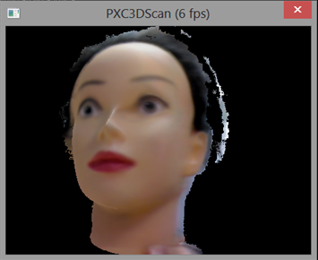
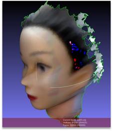

|
The SDK 3D scanning module generates 3D mesh data from the camera images. The module works in two modes: TARGETING and SCANNING. You must explicitly switch between the two modes. The TARGETING mode is used to reset the target scanning volume and optionally detect objects (or faces) in the scene. This is the default starting mode, if not explicitly set.

Figure 14: The Preview Image
Figure 14 shows a doll object in the TARGETTING mode. Once the target object/volume is established, the scanning process can be started by switching to the SCANNING mode.
In the SCANNING mode, the target object can be rotated in front of the camera to collect additional surfaces and color data. Alternatively, the camera can be rotated around the target object. Either approach works since the camera tracking algorithm is sophisticated enough to ignore the background while determining the camera motion relative to the target object.
While in the SCANNING mode, the state of the scanning volume can be converted to a standard mesh file format, as illustrated in Figure 15:

Figure 15: The Scanned Mesh of the 3D Object.
Limitation
| • | The scanning volume size is limited by the range and field of view of the camera. Usually, it is best to place the target object 15-30 inches in front of the camera. |
| • | The algorithm is designed to capture rigid objects. If a portion of the object moves (relative to other portions) while in the SCANNING mode, the scanned data may be ill-formed. If this happens, restart the scanning by switching back to the TARGETING mode. |
| • | When orbiting the object (or camera) in the SCANNING mode, be careful not to move too fast since this can cause the camera tracking algorithm to fail. If this happens, restart the scanning by switching back to the TARGETING mode. |
Output Data
In the TARGETING mode, you can retrieve the preview image (through the AcquirePreviewImage function) to visualize the camera images, the camera position and the scanning volume. In the SCANNING mode, you can retrieve the preview image that shows an approximation of the accumulated target object data within the scanning volume. Finally, you can generate the 3D object mesh file from a scanning volume in various standard formats: STL, OBJ and PLY.
Programming
Example 40 shows a typical 3D scanning program.
C++ Example 40: 3D Scanning
// Create a SenseManager instance
PXCSenseManager *sm=PXCSenseManager::CreateSenseManager();
// Enable 3D Scanning
sm->Enable3DScan();
// Get a 3D scanning handler here for configuration.
PXC3DScan *scan=sm->Query3DScan();
...
// Initialize the pipeline
sm->Init();
// Stream data
while (sm->AcquireFrame(true)>=PXC_STATUS_NO_ERROR) {
// Preview the scanning results
PXCImage *image=scan->AcquirePreview();
...
image->Release();
// If targetting is done, set the scanning mode.
if (targetting_completed)
scan->SetMode(PXCScan::SCANNING);
// If scanning is completed, break out.
if (scan_completed) break;
// Resume processing next frame
sm->ReleaseFrame();
}
// Save the scanned object
scan->Reconstruct(PXC3DScan::STL, L"C:\\mywork\\myobject.stl");
// Clean up
sm->Release();
|
C# Example 40: 3D Scanning
// Create a SenseManager instance
PXCMSenseManager sm=PXCMSenseManager.CreateSenseManager();
// Enable 3D Scanning
sm.Enable3DScan();
// Get a 3D scanning instance here for configuration
PXCM3DScan scan=sm.Query3DScan();
...
// Initialize the pipeline
sm.Init();
// Stream data
while (sm.AcquireFrame(true)>=pxcmStatus.PXCM_STATUS_NO_ERROR) {
// Retrieve the 3D scanning results
PXCMImage image=scan.AcquirePreview();
...
image.Dispose();
// If targetting is done, set the scanning mode.
if (targetting_completed)
scan.SetMode(PXCMScan.Mode.SCANNING);
// If scanning is completed, break out.
if (scan_completed) break;
// Resume next frame processing
sm.ReleaseFrame();
}
// Save the scanned object
scan.Reconstruct(PXCM3DScan.FileFormat.STL, "C:\\mywork\\myobject.stl");
// Clean up
sm.Dispose();
|
Java Example 40: 3D Scanning
// Create a SenseManager instance
PXCMSenseManager sm=PXCMSenseManager.CreateSenseManager();
// Enable 3D Scanning
sm.Enable3DScan();
// Get a 3D scanning instance here for configuration
PXCM3DScan scan=sm.Query3DScan();
...
// Initialize the pipeline
sm.Init();
// Stream data
while (sm.AcquireFrame(true)>=pxcmStatus.PXCM_STATUS_NO_ERROR) {
// Retrieve the 3D scanning results
PXCMImage image=scan.AcquirePreview();
...
image.Dispose();
// If targetting is done, set the scanning mode.
if (targetting_completed)
scan.SetMode(PXCMScan.Mode.SCANNING);
// If scanning is completed, break out.
if (scan_completed) break;
// Resume next frame processing
sm.ReleaseFrame();
}
// Save the scanned object
scan.Reconstruct(PXCM3DScan.FileFormat.STL, "C:\\mywork\\myobject.stl");
// Clean up
sm.close();
|
|